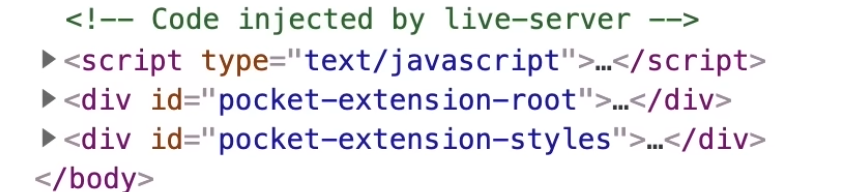

Routing
-
If you host static files on a normal HTTP server (e.g. Nginx, GitHub Pages, Netlify), the server handles routing automatically by matching URLs to files on disk. You don’t implement routing logic yourself.
-
"But what if I want to host my own site?"
-
Then you must provide the routing layer yourself.
-
Options:
-
Use an existing server
-
e.g. Nginx, Caddy, Apache. Configure it to serve your static files. Routing (path → file) is handled automatically.
-
-
Write your own HTTP server
-
Parse the HTTP request.
-
Extract the path.
-
Map it to a file in your directory (e.g.
/about→./public/about.html). -
Send correct status codes and headers.
-
-
-
 .
-
Live Server, VSCode.
GitHub Pages
-
404.htmlfor a custom 404 page. Useful for SPAs as a client-side fallback. There is a known SPA limitation: direct requests to client-side routes will return 404 unless you implement a 404→index.html redirect script or use a different host that supports rewrites. That workaround can cause an initial 404 status and SEO/UX issues. -
CNAMEfile or repository settings if you want a custom domain. Also set DNS records at your registrar.
.nojekyll
-
You need to be explicit about not using Jekyll.
-
Even if you’re not using Jekyll, GitHub Pages will try to run Jekyll by default.
-
Once
.nojekyllis committed and pushed, GitHub Pages will serve_index.htmland any other files or folders starting with_correctly.